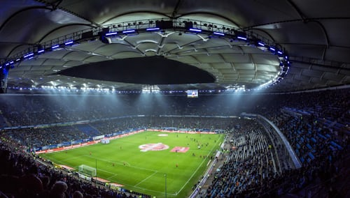

L'information autrement.
Plus qu'une chaîne, une vision.
Inter TV informe, éduque et inspire. Actualité, culture, société et divertissement : une chaîne ivoirienne au plus près du terrain et de sa communauté.
 Dernière vidéo
Sensibilisation à l’église méthodiste d’Abatta28 oct. 2026 · 810 vues
Dernière vidéo
Sensibilisation à l’église méthodiste d’Abatta28 oct. 2026 · 810 vues
Une chaîne ivoirienne au service de l'information
Basée à Abidjan, Inter TV couvre l'actualité locale, nationale et internationale, produit des reportages de terrain, des interviews et des captations d'événements. Notre mission : informer avec rigueur, éduquer avec passion et divertir avec authenticité.
En savoir plusInformer
L'actualité locale, nationale et internationale traitée avec rigueur.
Éduquer
Des contenus qui sensibilisent et font grandir notre communauté.
Inspirer
Des portraits et des histoires qui donnent envie d'agir.
Divertir
Culture, musique et société au cœur de nos programmes.
Ce que fait Inter TV
De la couverture d'événements à la production publicitaire, une équipe polyvalente au service de vos projets.
Couverture d'événements
Captation et diffusion de cérémonies, concerts et évènements.
Diffusion en direct
Live d'événements, conférences et émissions spéciales.
Interviews
Rencontres avec des personnalités, experts et acteurs de l'actualité.
Reportages
Reportages exclusifs sur les faits de société, la culture et les évènements.
Actualités
Couverture de l'actualité locale, nationale et internationale.
Publicité & communication
Promotion d'entreprises, marques, événements et services.
Inter TV en direct
Ne manquez aucun de nos programmes en direct.
Nos dernières vidéos
 YouTube
YouTubeSensibilisation à l’église méthodiste d’Abatta
 YouTube
YouTubeAbatta se prépare ! La chefferie Tchagba unit les églises pour l'investiture du nouveau chef
 YouTube
YouTubeÉconomie verte et salubrité : Le village d’Abatta mobilisé pour la protection de l’environnement
Sur le terrain avec Inter TV

SportUne actualité à partager, un projet à promouvoir ?
Contactez la rédaction d'Inter TV dès aujourd'hui.